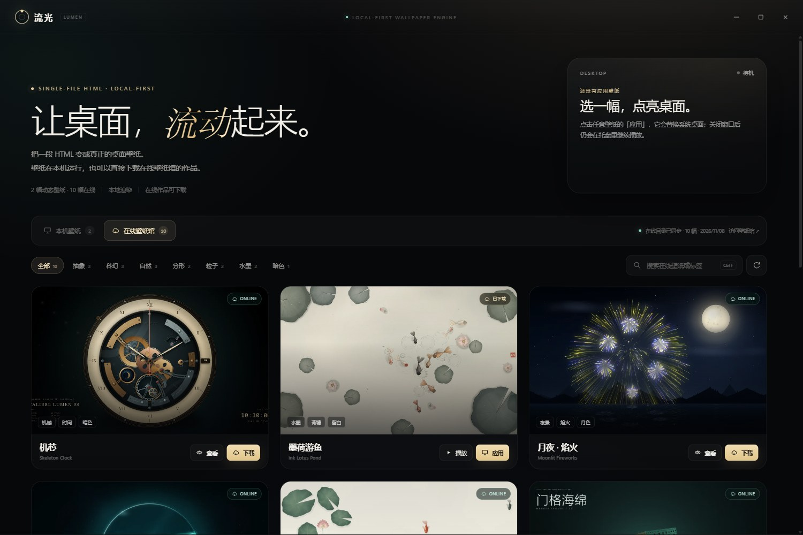

单文件渲染
每幅动态壁纸就是一个 wallpaper.html。Canvas、WebGL、CSS 动画都可以直接运行，不需要打包或安装额外运行时。
一个单文件 HTML 动态壁纸引擎。壁纸在本机运行，
也可以从在线壁纸馆直接带回桌面。

WALLPAPER LIBRARY / 2026WHY LUMEN / 001
流光壁纸把一段 HTML 变成真正的桌面层。没有浏览器地址栏，没有插件，只有你选择的那片光。
每幅动态壁纸就是一个 wallpaper.html。Canvas、WebGL、CSS 动画都可以直接运行，不需要打包或安装额外运行时。
通过 WebView2 宿主挂到桌面图标下方、壁纸层上方。支持打开、播放、停止，并在关闭壁纸库后继续驻留托盘。
使用 Electron 的桌面级窗口，按显示器铺满，不抢焦点、不挡操作。切换 Space 或重新登录后也能继续播放。
引擎里直接浏览同一座壁纸馆。看到喜欢的作品，点一下就能下载到本机，生成离线壁纸包，断网也能继续用。
所有作品都在普通文件夹里：wallpaper.html、preview.png 和可选的 meta.json。想换、想删、想分享，都直接操作文件。
通过 GitHub Releases 检查新版本，在后台下载，下次启动时静默覆盖安装。没有弹窗轰炸，也不打扰桌面。
TWO WAYS TO LIVE / 002
DOWNLOAD / 003
免费、开源、无广告。下载安装包，或从源码运行。你的桌面不需要再等一张合适的壁纸。
下载页面会自动读取最新 Release；如果还没有构建产物，可以先从源码运行。
RUN FROM SOURCE
需要 Node.js 20+。首次运行会下载 Electron，之后就可以直接用本地开发模式打开壁纸库。
npm install && npm start
OPEN SOURCE / 004
流光壁纸是一个独立、开源的小项目。Star 不会改变你的桌面，但会让更多人看到它，也会让下一次更新更有动力。